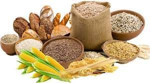
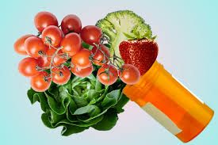

Daily intake of protein:
Good Sources of Protein

| Food | Protein(grams) |
| 3 ounces tuna, salmon, haddock, or trout | 21 |
| 3 ounces cooked turkey or chicken | 19 |
| 6 ounces plain Greek yogurt | 17 |
| ½ cup cottage cheese | 14 |
| ½ cup cooked beans | 8 |
Daily intake of Vitamins:
Good Sources of Vitamins
| Food | Vitamin |
| beef, liver, eggs, shrimp, fish, fortified milk, sweet potatoes, carrots, pumpkins, spinach, mangoes | Vitamin A |
| milk, yogurt, cheese, whole and enriched grains and cereals. | Vitamin B |
| Citrus fruit, potatoes, broccoli, bell peppers, spinach, strawberries, tomatoes, Brussels sprouts | Vitamin C |
| Fortified milk and cereals, fatty fish | Vitamin D |
| vegetables oils, leafy green vegetables, whole grains, nuts | Vitamin E |
Daily intake of Carbohydrates:
Good Sources of Carbohydrates
| Food | Carbs |
| apples, oranges, banana, pineapple, sweet potatoes, berries | Simple Carbohydrates |
| beans, potatoes, sweet potatoes, and some nuts | Starchy Carbohydrates |
| pumpkin, carrot, tomatoes, beans, broccoli, cucumbers, squash, etc. | Fibrous Carbohydrates |
| beans, peas, whole grains, barley, oats, wild rice, brown rice, etc. | Complex Carbohydrates |
Daily intake of Minerals:
Good Sources of Minerals
| Food | Minerals |
| yogurt, cheese, milk, salmon, leafy green vegetables | Calcium |
| Spinach, broccoli, legumes, seeds, whole-wheat bread | Magnesium |
| meat, milk, fruits, vegetables, grains, legumes | Potassium |
| shellfish, nuts, seeds, whole-grain products, beans, prunes | Copper |
3 Steps to sleep well
1. Stick to a sleep schedule
- Set aside no more than eight hours for sleep. The recommended amount of sleep for a healthy adult is at least seven hours. Most people don't need more than eight hours in bed to be well rested.
Go to bed and get up at the same time every day, including weekends. Being consistent reinforces your body's sleep-wake cycle.
If you don't fall asleep within about 20 minutes of going to bed, leave your bedroom and do something relaxing. Read or listen to soothing music. Go back to bed when you're tired. Repeat as needed, but continue to maintain your sleep schedule and wake-up time.
2. Pay attention to what you eat and drink
-
Don't go to bed hungry or stuffed. In particular, avoid heavy or large meals within a couple of hours of bedtime. Discomfort might keep you up.
Nicotine, caffeine and alcohol deserve caution, too. The stimulating effects of nicotine and caffeine take hours to wear off and can interfere with sleep. And even though alcohol might make you feel sleepy at first, it can disrupt sleep later in the night.
3. Include physical activity in your daily routine
-
Regular physical activity can promote better sleep. However, avoid being active too close to bedtime.
Spending time outside every day might be helpful, too.